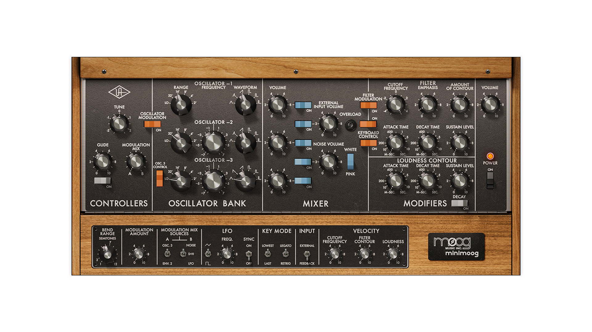

POPULARES
Este período se caracteriza por la expansión de los sintetizadores, la aparición de los primeros sistemas digitales y la consolidación de una cultura musical basada en la tecnología. La electrónica deja de ser solo experimental y se convierte en un fenómeno social y comercial.
Contexto histórico y cultural
Durante estas décadas la tecnología electrónica se vuelve más accesible, los sintetizadores dejan de ser sistemas enormes y costosos. Aparecen instrumentos portátiles y relativamente asequibles y surgen nuevas escenas musicales juveniles.
En este contexto nacen o se consolidan géneros como: synth-pop, electro, techno, house, industrial, ambient y la música electrónica pasa a tener importancia dentro de lugares como radios, pistas de baile, cine, televisión, publicidad. El sonido electrónico se vuelve paisaje sonoro de lo cotidiano.
Avances tecnológicos clave:
1. Sintetizadores portátiles
- Minimoog.
- ARP Odysseys.
- Sequential Prophet-5.
Estos sintetizadores ya no requieren cables ni sistemas modulares complejos, pueden transportarse y se pueden tocar como un teclado convencional.
2. Sintetizadores polifónicos y memorias
A fines de los setenta y comienzos de los ochenta los sintetizadores permiten tocar varias notas a la vez y se pueden guardar sonidos en memoria, lo cual facilita el uso en performances en vivo, la repetición de timbres y la producción comercial entre otros usos.
3. Samplers y sonido digital
En los años ochenta aparecen:
- Fairlight CMI.
- Emulator.
- Akai S-series.
Estos dispositivos permiten grabar sonidos reales, reproducirlos desde un teclado y manipularlos digitalmente. El sonido grabado se vuelve parte central de la música pop y electrónica.
4. El estándar MIDI (1983)
El MIDI (Musical Instrument Digital Interface) permite que sintetizadores, computadoras y cajas de ritmos se comuniquen entre sí. Esto hace posible: secuenciar música, sincronizar equipos, controlar múltiples instrumentos desde un solo teclado o computadora.
5. Cajas de ritmos y cultura de clubes
Instrumentos como:
- Roland TR-808.
- Roland TR-909.
Se vuelven centrales en: el hip hop, el electro, el techno, el house dando origen a una cultura de DJs y producores, especialmente en ciudades como Detroit, Chicago, Nueva York, Berlín, Londres.
El rol de la mujer
Durante estas décadas, las mujeres ya no solo participan en estudios experimentales, sino que:
- Graban discos comerciales.
- Trabajan en cine y publicidad.
- Desarrollan software musical.
- Participan en escenas underground.
Aunque la industria musical seguía siendo predominantemente masculina, varias artistas lograron visibilidad internacional y un impacto cultural duradero.



Sintetizador Minimoog